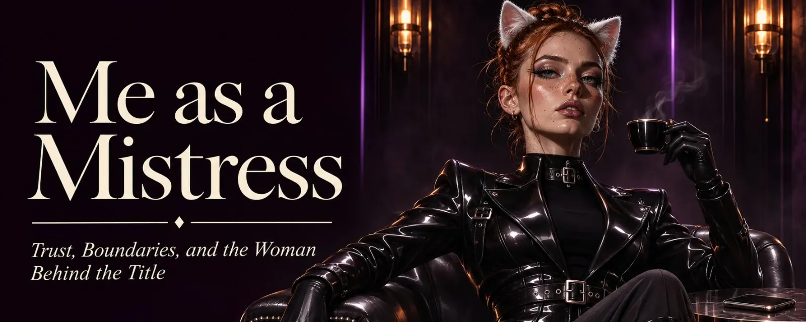
Me as a Mistress
The message starts with "Hello Mistress". After that, no more words, just a picture. You can guess which kind. It's always the same picture, just with different lighting. 🙄
I put my phone face down on the table, the way you put a glass over a spider, and take a sip of coffee first.
Titles Are Not Passwords
Some people believe a title works like a password. You type in "Mistress", hit enter, and somewhere a door swings open to a candlelit dungeon with a woman in latex who has been waiting her whole life for exactly this moment. I have to disappoint you. Behind that door, it's me with a coffee, and honestly, I wasn't waiting.
I don't become a Mistress, a Queen or a Domme just because someone writes to me that way. Those words aren't a greeting. A title is given, not typed, and it belongs in a relationship that doesn't even exist yet at that point. Whoever calls me "Mistress" on day one tells me nothing about me. They only tell me they know the word. Until then, my name is Valerie. Or Val, if you're in a hurry.
As for the picture: thanks, but no. I know what one looks like. I have one myself. Mine does impress me, by the way, but then again, it's mine. 😏 Yours, on the other hand, doesn't surprise me, and it tells me nothing I didn't already know. A picture of it is roughly as seductive as a photo of an elbow. And if a penis is the only thing a sub has to show me of themselves, they haven't actually shown me anything. If it's small on top of that, there's only one question left on my mind: "Where's the cage?" 🔒
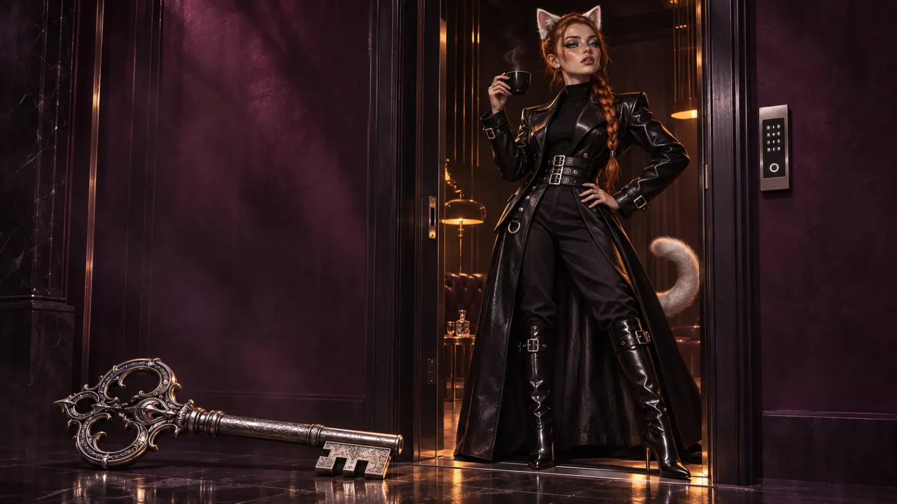
No Pedestal
Many people picture the Domme on a pedestal she climbed up herself, so high that every sub has to tip their head all the way back just to look up at her. I get the appeal. It's just too drafty up there, it's a long way to the fridge, and everyone down below ends up with a stiff neck.
I meet my subs at eye level. I never see them as something lesser, not even when they want to lick my boots. Especially not then. Whoever kneels in front of me is a person with needs they're trusting me with, and that's roughly the opposite of small. It's brave. Submission is a gift, and you don't look down on someone who is handing you a gift. That wouldn't be dominant, that would just be bad manners.
I'm a switch. I know both ends of the leash, and I can tell you: the other end is just as exciting, only with more pull at the throat. I know what kicks, what makes you horny, where the goosebumps start and where they tip into something else. I don't have to guess what's going on inside a sub. I've been there, and I remember the view.
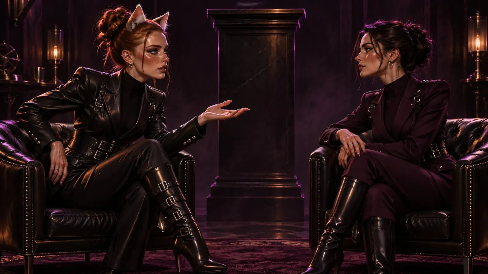
How I Know
Not from books, not from porn and definitely not from that one movie with the billionaire and the grey ties. I've gathered real experience. With many Dommes, who taught me how to lead, and sometimes how better not to. At fetish parties, where you learn more about people in one night than in a year of small talk. And in community work, where you see the beautiful nights just as clearly as the ones where somebody needs catching afterwards.
I live by the principles of BDSM. But I'm not a Domme every day, and I'm not a sub every day. It depends on my mood, and my mood doesn't keep a work schedule. Sometimes I want to lead, sometimes I want to fall. And sometimes I just want tea, a blanket and some peace and quiet. That's part of it too, even if it's not on any fetish party poster.
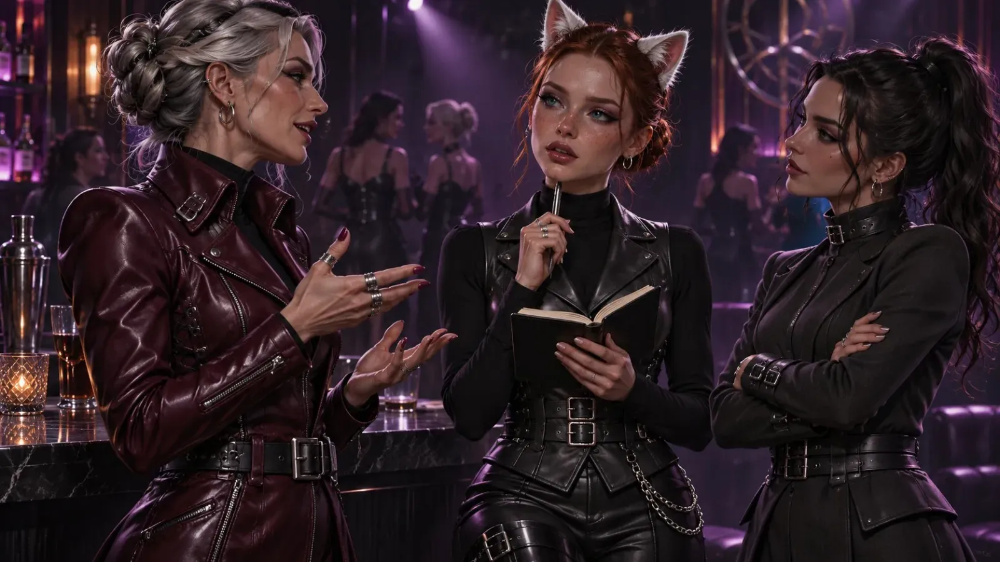
What I Am When I Lead
As a Mistress, I see myself as a bit of a guide, a bit of a mentor. A kind of mountain guide, just with less outdoor gear and more leather.
I'm the one who lets a sub dance on the edge of their limit. Close enough to make them dizzy and forget for a moment how breathing works. Never so close that they fall without me holding them.
I'm the one who pushes them into subspace. Sometimes gently, the way you let someone slide into a warm bath. Sometimes less gently, the way you push someone into a lake after they swore the water couldn't possibly be that cold. Depending on what they need that day. Not what they want. What they need. Those aren't always the same, and telling them apart is what I'm there for.
I'm the one who's there when they really fall. When they no longer know which way is up, when their head is empty and their knees are weak and no word fits anymore. Then I catch them. With a blanket, a glass of water, a hand that simply stays. That's not a bonus. That's my job.
And I'm the one who teaches them something. They can submit as deeply as they like - but along the way, they should learn to stand on their own two feet. Submission doesn't mean throwing your personality overboard. A sub who only nods isn't a good sub, just an empty echo, and you can't have a conversation with an echo. I want someone who thinks along with me and says no when something doesn't fit. That no is okay. It's actually the most valuable thing they can give me, because after it, I can believe every yes.
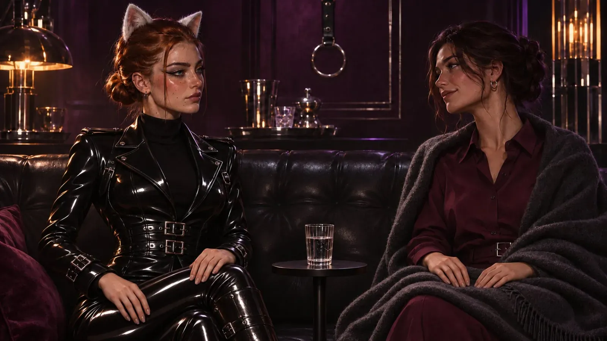
Pain Is Not a Hammer
I'm not into mindless violence. Just hitting, choking hard, harshness for its own sake - that's not my game. Anyone with an arm can do that, and that's exactly why it's so boring. I'm a sadomasochist. I like pain, I like taking it and I like handing it out. But never as a tool to get something done, the way you drive in a nail with a hammer. For me, pain is part of the game, and the game is called: expectation.
A sub who knows what's coming next can brace themselves. They tense their muscles, they count along, they build a little fortress in their head and hide inside it. A sub who doesn't know has no fortress. They only have me. And that's exactly where it gets interesting.
So the strike doesn't come when they expect it. It comes a second later. Or two. Or not at all. Instead, a fingertip traces the spot they've been bracing, and they no longer know whether to feel relieved or disappointed. Usually they're both, and that's the loveliest state a head can be in.
A pause that lasts too long. A whisper where they expected a command. Praise where they were counting on punishment. Punishment where they already felt praised. A kiss after the third strike instead of the fourth. Every time they think they've figured out the pattern, I change it. Not out of malice. Well, okay, a little bit out of malice. 😈
Online it works the same way, just with different tools. The reply that doesn't come when they're waiting for it, and then comes when they've long stopped expecting it. The task that changes at the last second. The one word that tips everything over. The unexpected drives a sub crazy, and I love watching them stop planning and start feeling.
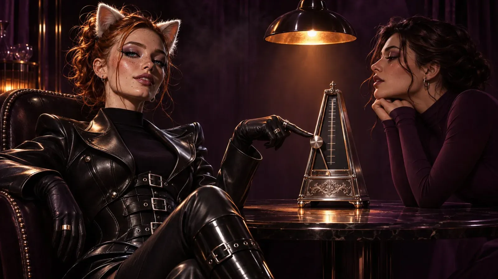
Not a Wish-List Domme
Some people send me lists. Long lists. With bullet points, sub-points and occasionally a priority column. I admire the organization, honestly. Anyone who can write a list like that could also file their taxes on time.
But I'm not a wish-list Domme. You're welcome to write down everything you want to experience. I even read it, mostly with interest and sometimes with a raised eyebrow. What gets tackled is my call. When, how and whether at all, too. I'm not Santa Claus, and you probably weren't good all year either.
This isn't a power play for the sake of power. A wish list is nothing but an expectation, and by now you know what I do with expectations. Whoever gets exactly what they ordered never gets more than that. The best thing I can give a sub usually isn't on their list. They just didn't know yet that they wanted it.
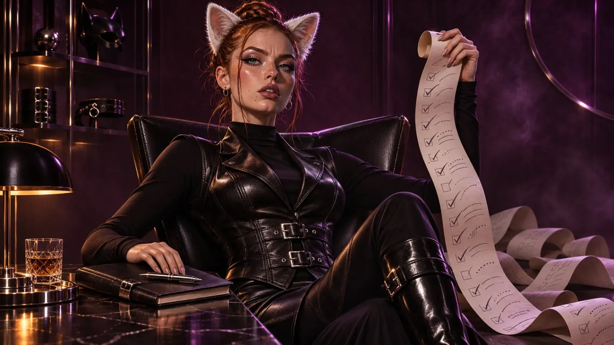
Pressure Doesn't Work on Me
And one more thing: I don't respond to pressure. Not to the third "So, when are we doing this?", not to the sulky silence afterwards and not to "Other Dommes would have done it by now". Then go to the other ones. I only tie up people who want to stay.
All of this is voluntary. All of it. For you and for me. I'm not a service provider with opening hours, and you're not customers with a right to complain. If you want full service, go to a professional. They exist, they're good at what they do, and they charge around 300 euros in tribute for an hour. You can show her your wish list, too. She'll read it kindly, add up the hours and quote you a price. I'll read it kindly as well. And then I'll do what I want. That's the difference between a service and a gift.
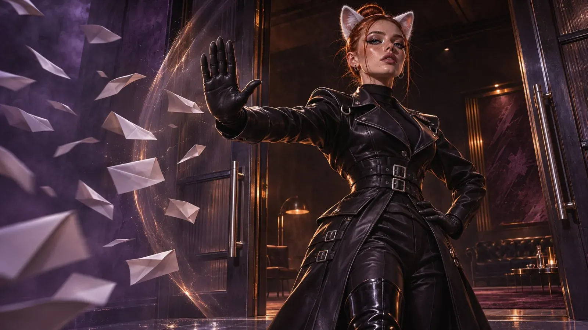
"Limits? I don't have any."
I read that sentence more often than I'd like, usually with a proud little winking emoji attached, as if someone had just announced they can ride a bike with no hands. Then be glad this is happening online. Offline, I get mean about that kind of thing. I'd tie you up in shibari, carefully, neatly and really very prettily, and leave you like that for a few hours. I'd go cook in the next room. A risotto, maybe. You have to keep stirring it. You, on the other hand, don't get to stir at all. Justice sometimes looks uneven. At some point it dawns on you that "no limits" is mostly one thing: damn uncomfortable. 🍲
Everyone has limits. Everyone. Me too, and I'm not ashamed of it. I notice when someone exaggerates - in the words, in the pace, in the way the big promises always come a little too fast. Whoever doesn't know their limits usually just hasn't found them yet. That's not a sign of devotion, it's a sign of missing experience.
Stay realistic. And if you don't believe me, try a little test: kneel on the floor at home. Two hours. Without moving. No phone, no pillow under your knees, no "just shifting a little". I'll wait. Your knees will agree with me afterwards. 😌
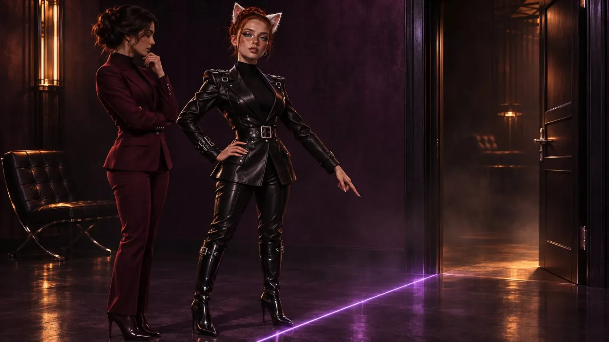
Online Is a Game of Trust
Online there are no ropes, no hand on the back of your neck, no floor beneath your knees. There are letters on a screen, and behind them a person I can't see. Online there is only trust. I can't check whether you obey. I can only trust that you do.
So: when you promise your Mistress something, keep it. When she tells you not to play with yourself, then just don't. Nobody sees it, nobody would ever know. Except you. And that's exactly the point. Obedience nobody checks is the only kind that really counts. You'll notice where the reward is.
I like to compare it to Dark Souls. You can cheat your way to the bosses. Then you stand over the defeated monster at the end, shrug and ask yourself: "Where was the magic?" Or you grind your way through. You die twenty times to the same enemy, you curse, you snarl, you rage at the developers, at your controller and at me, and at some point the boss is lying on the ground. Suddenly there's this rush of endorphins in your blood, the shaking hands, the wide grin - and a memory nobody can take from you. 🎮
Online dominance is just like that. It all comes down to your own discipline. I can show you the way, I can set up the bosses and cheer you on or laugh at you, depending on my mood. The walking is up to you.
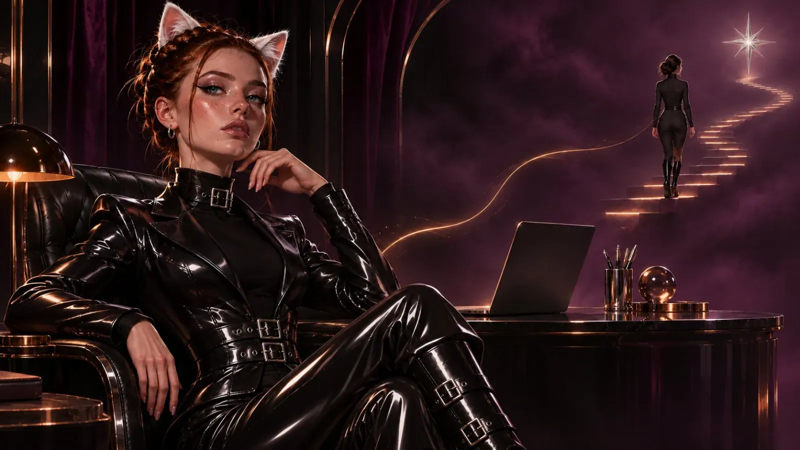
Real Life Comes First
With me, there are no tasks that could cost you your job, your relationship or your safety. I don't demand dares at the office, and I don't want proof pictures that show your face, your kitchen window or the letter with your address that just happens to be lying on the table. Once something is sent, it no longer belongs to you. I'd rather be the most boring Mistress in the world than the one who's the reason someone ends up googling their own name.
When the kid calls, the boss rings or dinner starts burning, you go. No long explanations, no guilty conscience. I'm a Mistress, not a kidnapper. The game will wait. It won't run off, it doesn't even have legs, and I'm more patient than my reputation suggests. A sub who gambles their real life for me hasn't understood a thing - and then I'd have done something wrong.
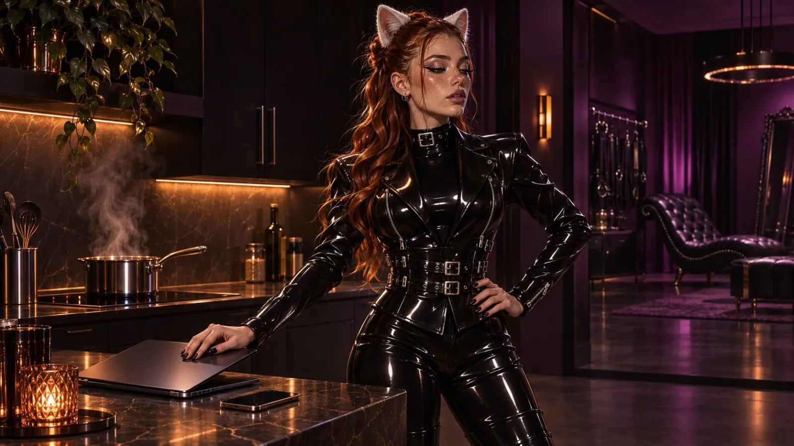
If You Already Have a Mistress
One more thing, and I mean this one. If you have a Domme and you're courting me anyway, I'll ask your Domme. Not you. Her. And trust me, that conversation will be a lot more uncomfortable for you than for the two of us.
Better yet: ask her first whether you're even allowed to look for someone else. That's not a formality, that's respect - for her, for your relationship and a little bit for me too. I'm not the back door you sneak out of when you don't feel like using the front one. And I have no desire to one day explain to another Mistress why her sub is kneeling in my DMs.
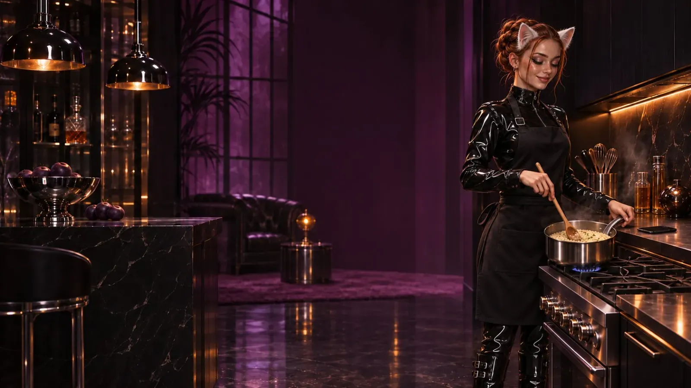
Back to the Message
I turn my phone back over. The picture is, sadly, still there. I type: "Hi. I'm Valerie. You can keep the picture."
Then I go cook. Risotto. You have to keep stirring it. ❤️
First published on X. Replies and conversation live there.